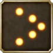
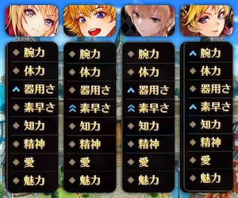
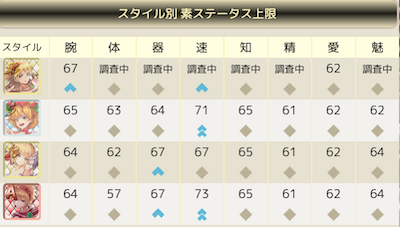
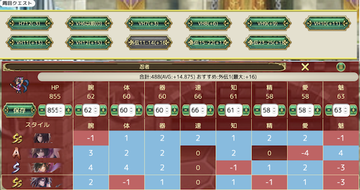
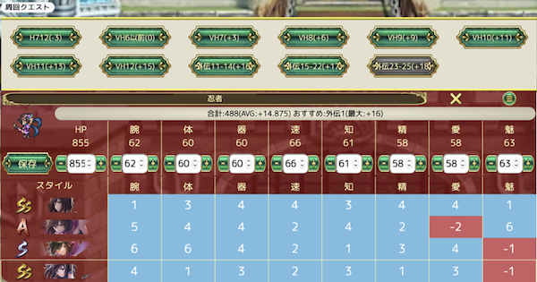
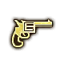
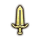
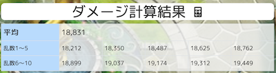
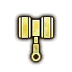
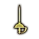

<!DOCTYPE html>
<html prefix="og: http://ogp.me/ns#" lang="ja">
    <head>
        <!-- Global site tag (gtag.js) - Google Analytics -->
        <script async src="https://www.googletagmanager.com/gtag/js?id=UA-138966739-1"></script>
        <script>
            window.dataLayer = window.dataLayer || [];
            function gtag() {
                dataLayer.push(arguments);
            }
            gtag('js', new Date());

            gtag('config', 'UA-138966739-1');
        </script>
        <script async src="//pagead2.googlesyndication.com/pagead/js/adsbygoogle.js"></script>
        <meta charset="utf-8">
        <title>【ロマサガRS】ロマサガRSの知っておきたい知識</title>
        <meta property="og:title" content="【ロマサガRS】ロマサガRSの知っておきたい知識" />
        <meta property="og:url" content="https://nao-romasaga.github.io/knowledge.html" />
        <meta property="og:description" content="他では教えてくれない、ロマサガRSにちょっと詳しくなれる豆知識です。ゲーム中に疑問に思った仕様はここで解決できるかも！？" />
        <meta name="description" content="他では教えてくれない、ロマサガRSにちょっと詳しくなれる豆知識です。ゲーム中に疑問に思った仕様はここで解決できるかも！？【ロマンシングサガ リユニバース】" />
        <meta property="og:image" content="https://nao-romasaga.github.io/img/twitter_card.png" />
        <meta property="og:site_name" content="ロマサガRS便利ツール" />
        <meta property="og:type" content="website">
        <meta property="og:locale" content="ja_JP" />
        <meta name="twitter:card" content="summary_large_image" />
        <meta name="twitter:site" content="@nao_romasaga_rs" />
        <meta name="viewport" content="width=device-width, initial-scale=1">
        <style>
            .MENU ul {
                border: solid 0px #ffb03f;
                padding: 0 0.5em;
                position: relative;
            }

            .MENU ul li {
                line-height: 1.5;
                padding: 0.5em 0 0.5em 1.4em;
                border-bottom: dashed 1px silver;
                list-style-type: none!important;
            }

            .MENU ul li:not(.child):before  {
                font-family: "Font Awesome 5 Free";
                content: "\f075";/*アイコン種類*/
                font-weight: bold;
                position: absolute;
                left : 0.5em; /*左端からのアイコンまで*/
                color: brown; /*アイコン色*/
            }
            .MENU ul li.waiting:not(.child):before  {
                font-family: "Font Awesome 5 Free";
                font-weight: bold;
                content: "\f023";/*アイコン種類*/
                position: absolute;
                left : 0.5em; /*左端からのアイコンまで*/
                color: gray; /*アイコン色*/
            }
            .MENU .waiting {
                color: gray;
            }
            
            .MENU .childs {
                padding-left:0px;
            }
            .MENU .child {
                padding-left:0px;
            }
            .MENU .child:before {
                font-family: "Font Awesome 5 Free";
                content: "\f059";
                color: brown;
                margin-right: 5px;
            }

            .MENU ul li:last-of-type {
                border-bottom: none;
            }
            .content-bg {
                background-color: rgba(230, 225, 207, 0.8);
            }
            /* スマホ　767px以下 */
            @media only screen and (max-width: 767px){
                .viewImg {
                    width: 100%;
                }
                .waiting {
                    display: none;
                }
            }
            .MENU a {
                color: brown;
            }
            
        </style>
    </head>
    <body>
        <div class ="" style="background: url(https://romasagatool.com/img/bg_repeat.png); background-size: contain;">
            <div class="">
                <div class="row no-gutters">
                    <div class="col-12 col-md-3" style="padding:0px 10px;">
                        <div id="INDEX" class="text-center label-text-small width-100">目次</div>
                        <div class="MENU style-bgcolor" style="padding-left: 10px">
                            <ul>
                                <li class="parent"><a class='INDEX_LI yubi' data-id="13">OverDriveについて</a></li>
                                <li class="parent"><a class='INDEX_LI yubi' data-id="0">ステータス上限について</a></li>
                                <li class="parent"><a class='INDEX_LI yubi' data-id="1">ステータス上昇率について</a></li>
                                <li class="parent"><a class='INDEX_LI yubi' data-id="11">HP上昇率ってどれぐらい？</a></li>
                                <li class="parent"><a class='INDEX_LI yubi' data-id="10">陣形補正は何を参照する？</a></li>
                                <li class="parent"><a class='INDEX_LI yubi' data-id="2">ダメージ計算について</a></li>
                                <li class="parent"><a class='INDEX_LI yubi' data-id="14">HP回復量計算について</a></li>
                                <li class="parent"><a class='INDEX_LI yubi' data-id="6">技ランクについて</a></li>
                                <li class="parent"><a class='INDEX_LI yubi' data-id="16">技のランクアップ率について</a></li>
                                <li class="parent"><a class='INDEX_LI yubi' data-id="3">聖石について</a></li>
                                <li class="parent"><a class='INDEX_LI yubi' data-id="4">技・術の命中率について</a></li>
                                <li class="parent"><a class='INDEX_LI yubi' data-id="5">バフ・デバフについて</a></li>
                                <li class="parent"><a class='INDEX_LI yubi' data-id="15">技・術・アビリティの効果発動順について</a></li>
                                <li class="parent"><a class='INDEX_LI yubi' data-id="7">「術」と「属性」は別物</a></li>
                                <li class="parent"><a class='INDEX_LI yubi' data-id="9">裏道場などの「強さに合った敵」とは？</a></li>
                                <li class="parent"><a class='INDEX_LI yubi' data-id="12">連携/OD連携の行動順について</a></li>
                                <li class="parent"><a class='INDEX_LI yubi' data-id="8">用語集</a></li>
                                
                                
<!--
                                <li class="parent"><a href='#4'>状態異常について</a>
                                    <ol class="childs">
                                        <li class="child"><a href='#4-1'>成功率はどうやってあげる？</a></li>
                                        <li class="child"><a href='#4-2'>武器威力は成功率に関係する？</a></li>
                                    </ol>
                                </li>
                                <li class="parent waiting">この新武器って必要？
                                        <ol class="childs">
                                                <li class="child">強化時の威力の上がりかた</li>
                                        </ol>
                                </li>
                                <li class="parent waiting">陣形効果について
                                    <ol class="childs">
                                        <li class="child">50%上がるってどういうこと？</li>
                                    </ol>
                                </li>
                                <li class="parent waiting">火+などの術威力武器
                                    <ol class="childs">
                                        <li class="child">術と属性は異なる</a></li>
                                        <li class="child">術威力は何の威力が上がる？</a></li>
                                    </ol>
                                </li>
        
                                <li class="parent waiting">オーラムが足りない...<i class="fas fa-comments-dollar"></i>
                                        <ol class="childs">
                                                <li class="child">周回クエスト 効率</a></li>
                                        </ol>
                                </li>
                                <li class="parent waiting">三光石が足りない...<i class="fas fa-comments-dollar"></i>
                                    <ol class="childs">
                                            <li class="child">周回クエスト 効率</a></li>
                                    </ol>
                            </li>
                        -->
                        </ul>
                        </div>
                        <!-- サイドバー350x350 -->
                        <ins class="adsbygoogle"
                             style="display:inline-block;width:350px;height:350px"
                             data-ad-client="ca-pub-5008373409434899"
                             data-ad-slot="7140322959"></ins>
                        <script>
                             (adsbygoogle = window.adsbygoogle || []).push({});
                        </script>
                    </div>
                    <div class="ARTICLE_TOP col-12 col-md-8">
                        <div class="ARTICLE">
                            <h4 class="text-center label-text-small width-100">ステータス上限について</h4>
                            <div class="content-bg kadomaru">
                                <div class="style-skill-list">ステータス上限とは</div>
                                ステータス上限は以下の３つの合計によって決定しています<br>
                                <span style="font-size:1.2em;">【キャラクター成長傾向】<span id="dotID33518" class="dot_mid dot char-winner" style="background:url(./img/dot/ID36a38.png) no-repeat;"></span> +<br>
                                    【スタイル成長傾向】
                                    
                                    
                                    
                                    +<br>
                                    【クエスト設定値】5話,6話,7話,Normal/Hard/VeryHardなど</span><hr>
                                【キャラクター成長傾向】：キャラクターに設定された値<br>
                                　キャラクターが持つ値のため、スタイルを変更してもこの値は変わりません<br>
                                【スタイル成長傾向】：スタイルに設定された値<br>
                                　スタイルを切り替えることで変更されます<br>
                                【クエスト設定値】：クエストごとに設定された値<br>
                                　VH5は45、VH7は48などクエストの難易度により設定が異なります
                                <div class="fukidashi text-center">例：キャットの場合</div>

                                ・キャットのキャラクター成長傾向
                                <table class="style-skill-list text-center" border="1">
                                    <tr><td>項目</td><td>腕</td><td>体</td><td>器</td><td>速</td><td>知</td><td>精</td><td>愛</td><td>魅</td></tr>
                                    <tr><td>キャラ値</td><td>2</td><td>1</td><td>1</td><td>4</td><td>2</td><td>-1</td><td>-1</td><td>1</td></tr>
                                </table>
                                ・キャット[猫の爪は痛いわよ]のスタイル成長傾向
                                <table class="style-skill-list text-center" border="1">
                                    <tr><td>項目</td><td>腕</td><td>体</td><td>器</td><td>速</td><td>知</td><td>精</td><td>愛</td><td>魅</td></tr>
                                    <tr><td>[猫の爪は痛いわよ]</td><td>-1</td><td>-2</td><td>3</td><td>0</td><td>0</td><td>-1</td><td>0</td><td>0</td></tr>
                                </table>
                                ・VH6のクエスト設定値：45
                                <br>
                                これらを足し合わせると
                                <table class="style-skill-list text-center" border="1">
                                    <tr><td>項目</td><td>腕</td><td>体</td><td>器</td><td>速</td><td>知</td><td>精</td><td>愛</td><td>魅</td></tr>
                                    <tr><td>キャラクター値</td><td>2</td><td>1</td><td>1</td><td>4</td><td>2</td><td>-1</td><td>-1</td><td>1</td></tr>
                                    <tr><td>[猫の爪は痛いわよ]</td><td>-1</td><td>-2</td><td>3</td><td>0</td><td>0</td><td>-1</td><td>0</td><td>0</td></tr>
                                    <tr><td>VH6クエスト設定値</td><td>45</td><td>45</td><td>45</td><td>45</td><td>45</td><td>45</td><td>45</td><td>45</td></tr>
                                    <tr><td>VH6<span class='d-none d-md-inline'>における</span>の上限</td><td>46</td><td>44</td><td>49</td><td>49</td><td>47</td><td>43</td><td>44</td><td>46</td></tr>
                                </table>
                                これがVH6におけるSSキャット[猫の爪は痛いわよ]のステータス上限です。
                                <div class="bg-warning text-center"><i class="fas fa-exclamation-triangle"></i> 注意</div>
                                ここに出てくるキャラクター成長傾向とスタイル成長傾向の具体的な数字はゲーム中どこにも表示されません<br>
                                こういうものが内部的には設定されている。という程度でご理解頂ければと思います

                                <div class="style-skill-list">Baseってなに？+10や+15ってなに？</div>
                                Baseとは？<br>
                                <i class="fas fa-check-circle"></i>前述の【クエスト設定値】と同じです<br>
                                ステータスの基底となるためBaseと表現しています<br>
                                クエスト設定値45はBase45、クエスト設定値48はBase48と言えます<br>
                                <br>
                                各クエストのbase設定は開発ブログの方の記事に纏まっていますので、そちらをご参照ください<br>
                                <a href="https://romasagatool.com/blog/archives/1449" target="_new">【ロマサガRS】【永久保存版】全クエストの成長限界 調査結果報告</a>
    
                                <div class="style-skill-list">素ステとは</div>
                                <i class="fas fa-check-circle"></i>スタイルや装備に影響されないキャラクターの素のステータス<br>
                                戦闘終了時に上がる【キャラクター固有】のものを指します<br>
                                スタイルや装備、裏能力によって上がるステータスとは別物です<br>

                                <div class="style-skill-list">スタイルにあるってなに？</div>
                                【スタイル成長傾向】の具体的な数字によって表示が変わります<br>
                                ：4〜9 / 
                                ：1〜3 / 
                                ：-9〜0<br>
                                となります
                                <div class="fukidashi text-center">例：キャットの場合</div>
                                <picture>
                                        <source type="image/webp" srcset="./img/knowledge/styleind.webp" />
                                        
                                </picture>
                                <br>
                                キャットはこのようにスタイルでマークのつき方が異なっています<br>
                                実際のステータス値と比べてみましょう（<a href="/style.html?s=ID36a44" target="_blank">キャットのスタイル詳細より引用</a>）<br>
                                この画像のステータスは、外伝2のクエスト設定値63が設定されています<br>
                                <picture>
                                        <source type="image/webp" srcset="./img/knowledge/styletable.webp" class='viewImg' />
                                        
                                </picture>
                                <br>
                                ここから、キャラクター成長傾向とクエスト設定値の63を引くとこのようになります
                                <table class="style-skill-list text-center" border="1">
                                    <tr><td>スタイル</td><td>腕</td><td>体</td><td>器</td><td>速</td><td>知</td><td>精</td><td>愛</td><td>魅</td></tr>
                                    <tr><td></td><td>2</td><td>??</td><td>??</td><td>??</td><td>??</td><td>??</td><td>0</td><td>??</td></tr>
                                    <tr><td></td><td>0</td><td>-1</td><td>0</td><td>4</td><td>0</td><td>-1</td><td>0</td><td>-2</td></tr>
                                    <tr><td></td><td>-1</td><td>-2</td><td>3</td><td>0</td><td>0</td><td>-1</td><td>0</td><td>0</td></tr>
                                    <tr><td></td><td>-1</td><td>-7</td><td>3</td><td>6</td><td>0</td><td>-1</td><td>0</td><td>0</td></tr>
                                </table>
                                ：4〜9 / 
                                ：1〜3 / 
                                ：-9〜0 の範囲で設定されてるのがわかります<br>
                                のスタイル成長傾向がまだ上限不明ですが、速はがついていることから1〜3であることがわかっているため、外伝2での上限は68〜70であることが推測できます<br>

                                <ins class="adsbygoogle"　style="display:block; text-align:center;" data-ad-layout="in-article" data-ad-format="fluid" data-ad-client="ca-pub-5008373409434899" data-ad-slot="1992251055"></ins><script>(adsbygoogle = window.adsbygoogle || []).push({});</script>
                                <button class="icon_btn_positive UP_TOP width-100 width-max fuchidori-white footer-font " style="padding:5px 0px;"> <i class="fas fa-arrow-up d-none d-md-inline"></i> 目次に戻る <i class="fas fa-arrow-up"></i></button>
                            </div>
                        </div>
                        <div class="ARTICLE">
                            <h4 class="text-center label-text-small width-100">ステータス上昇率について</h4>
                            <div class="content-bg kadomaru">
                                <div class="style-skill-list">ステが低いほど上がりやすいの？</div>
                                上限に近いほどステータスは上がりにくくなります<br>
                                version2.0.0からステータスの成長率はかなり緩和されています<br>
                                生放送の情報では上昇確率は二倍になった。とのことです<br><br>
                                <br>
                                ではステータスが低いほど（上限から遠いほど）上がりやすいのか。に関しては<br>
                                「上限まで残り5」と「上限まで残り20」では上昇率が同じであることが武闘会の周回により検証されています<br>
                                ＜参考資料:<a href='https://docs.google.com/spreadsheets/d/1PYABXd-gBNXqFQWJTL-ZXZxpv7Bn5GANNtKRbg78ZKk/edit#gid=0' target="_blank">武闘会760周の周回データ</a>＞
                                <hr>
                                つまりステータス上昇は
                                <h5 style='color:blue'><i class="fas fa-check-circle"></i>上限から5以上離れている場合、上限-5でも上限-20でも同じ確率で上がる</h5>と言ってよいでしょう<br>
                                ちんさんが詳しいまとめを発信しておられます > <a href='https://peing.net/ja/q/1576c874-3e82-4f38-a788-0057c219b5d4' target="_blank">参考</a>
                                <br><br>
                                <span style="color:red; font-size:20px">ver1.10.0以降</span><br>
                                ステータスがかなり上がりやすくなっています。今まで上限達成はかなりの周回数が必要であまり現実的でなかったものが現実的に達成できるレベルまで緩和されています


                                <a name='2-2'></a>
                                <div class="style-skill-list">どこを周回すればいいの？</div>
                                前述の通り、ステータスは上限から5以上離れていればどこを周回しても上がる確率は同じです<br>
                                これを踏まえると<br>
                                1. スタミナ消費が少ないクエスト<br>
                                2. 全滅せず無理なく周回できるクエスト<br>
                                3. ついでにドロップアイテムが狙えるクエスト<br>
                                を基準にすると良いと思います<br>
                                <hr>
                                ▼オススメ▼<br>
                                便利ツールの<a href='party.html' target='_blank'>育成パーティ上限チェック</a>を使うと、どのクエストであとどれぐらいステータスが伸びるか調べることができます<br>
                                <picture>
                                        <source type="image/webp" srcset="./img/knowledge/party1.webp"  class='viewImg' />
                                        
                                </picture>
                                <br>

                                表示されている数字は上限まであとどれぐらい伸びるかを表しています<br>
                                <span style="background-color:skyblue">青表示</span>は成長するステータス、
                                <span style="background-color:salmon">赤表示</span>は上限を超えているためもう成長しないステータスです<br><br>
                                画像は外伝1で水着アザミ利用時です<br>
                                水着アザミは外伝1での速上限は66であるため、もう成長しないことがわかります<br>
                                速を成長させるためにはSSアザミにスタイル変更する必要があります<br>
                                あるいは、周回するクエストを変えてみても良いでしょう<br>
                                <hr>
                                周回クエストを外伝1(+16)から外伝2(+18)に変更した場合<br>
                                <picture>
                                        <source type="image/webp" srcset="./img/knowledge/party2.webp"  class='viewImg' />
                                        
                                </picture>
                                <br>

                                +16から+18に変わったので、ステータスも全体的に2伸び代ができました<br>
                                水着アザミは速上限まで2なので、成長する確率は低いですがSSアザミなら速上限まで4なので比較的上がりやすいことがわかります<br>
                                速をあげるつもりならSSアザミに切り替えると良いでしょう<br>
                                <br><br>
                                ステータスの入力はスタミナが切れたタイミングなど適宜行うと良いでしょう<br>
                                <a href='party.html' target='_blank'>育成パーティ上限チェック</a>を使えば、スタイルを切り替えたり育成キャラを切り替えを行い効率よく行うことができるでしょう<br>
                            </div>
                            <ins class="adsbygoogle"　style="display:block; text-align:center;" data-ad-layout="in-article" data-ad-format="fluid" data-ad-client="ca-pub-5008373409434899" data-ad-slot="1992251055"></ins><script>(adsbygoogle = window.adsbygoogle || []).push({});</script>
                            <button class="icon_btn_positive UP_TOP width-100 width-max fuchidori-white footer-font " style="padding:5px 0px;"> <i class="fas fa-arrow-up d-none d-md-inline"></i> 目次に戻る <i class="fas fa-arrow-up"></i></button>
                        </div>
                        <div class="ARTICLE">
                            <h4 class="text-center label-text-small width-100">ダメージ計算について</h4>
                            <div class="content-bg kadomaru">
                                <a name="3-1"></a>
                                <div class="style-skill-list">基本計算式(簡易) <i class="fas fa-calculator"></i></div>
                                ダメージの計算式は大雑把に説明すると下記の通りです<br>
                                <span style="font-size:22px; color:red;">威力項</span> × 
                                <span style="font-size:22px; color:blue;">ステータス項</span> × 
                                <span style="font-size:22px; color:darkgreen;">倍率項</span> = 
                                ダメージ<br>
                                <hr>
                                各項目の内訳は下記の通り<br>
                                <i class="fas fa-check-circle"></i>威力項：武器威力、技威力項<br>
                                <i class="fas fa-check-circle"></i>ステータス項：腕力・素早さ・器用さ・知力、敵の体力・精神<br>
                                <i class="fas fa-check-circle"></i>倍率項：アビリティ（テンションIVなど）、マスターレベル、聖石、連携、敵耐性、乱数<br>
                                ◆連携時のダメージボーナス<br>
                                　2,3連携 +30%<br>
                                　4連携 +40%<br>
                                　5連携 +50%<br>

                                <a name="3-2"></a>
                                <div class="style-skill-list">武器威力が１上がるとどれぐらいダメージ違うの？</div>
                                武器威力は威力項に入ります<br>
                                <i class="fas fa-check-circle"></i><span style="font-size:22px; color:red;">威力項</span>　＝　武器威力 ＋ 技威力項<br>
                                このため、<span style="color:red;">現在の武器威力が大きいほど。技威力項が大きいほど</span>武器威力1上昇によるダメージ増加は少なくなります<br>
                                <br>

                                通常攻撃（技威力項を７に仮置き）で計算すると<br>
                                <div class="fukidashi text-center">例：武器威力が１０から１１に変わる場合</div>
                                威力項は10+7から11+7に増加。18÷17=1.058なので<br>
                                <i class="fas fa-check-circle"></i>武器威力１増加でダメージは<span style="color:blue">5.8%増加</span>します<br>
                                <br>
                                <div class="fukidashi text-center">例：武器威力が２９から３０に変わる場合</div>
                                威力項は29+7から30+7に増加。37÷36=1.027なので<br>
                                <i class="fas fa-check-circle"></i>武器威力１増加でダメージは<span style="color:blue">2.7%増加</span>します<br>
                                <br>
                                <div class="fukidashi text-center">例：武器威力が２９から３０に変わる＋無明剣：威力69の場合</div>
                                威力項は29 + 69 から 30 + 69に増加。98÷97=1.0102なので<br>
                                <i class="fas fa-check-circle"></i>武器威力１増加でダメージは<span style="color:blue">1.02%しか</span>増加しません<br>
                                <br>
                                <div class="bg-warning text-center"><i class="fas fa-exclamation-triangle"></i> 注意</div>
                                実際は武器種により武器威力に係数がかかります。<br>
                                <table>
                                    <tr>
                                        <td>体術</td>
                                        <td>＝ 武器威力 ＋ 技威力</td>
                                    </tr>
                                    <tr>
                                        <td>銃</td>
                                        <td>＝ 武器威力 × 1.9 ＋ 技威力</td>
                                    </tr>
                                    <tr>
                                        <td>その他</td>
                                        <td>＝ 武器威力 × 1.5 ＋ 技威力</td>
                                    </tr>
                                </table><br>
                                <span style="color:blue"><i class="fas fa-check-circle"></i>武器威力を１あげる事によるダメージ増加は、銃は大きく体術は少ないと言えます<br></span>
                                武器を更新する際の目安にしてください<br>

                                <a name="3-3"></a>
                                <div class="style-skill-list">技Rankで威力はどれぐらい変わる？</div>
                                前述の武器威力では技威力はrank無視の簡易計算しましたが実際にはrankより威力が変化します<br>
                                計算式は下記の通りです<br>
                                <i class="fas fa-check-circle"></i>技威力 = 技威力 + (技威力 - 5) + (技威力 - 5) × (ランク/100)<br>
                                <div class="fukidashi text-center">例：サブミッション（威力27）の場合</div>
                                技威力 = 27 + 22 + (22 * ランク/100)<br>
                                Rank1 = 49.22<br>
                                Rank99 = 70.78<br>
                                <i class="fas fa-check-circle"></i>Rank1から99にすることで<span style="color:blue">技威力が1.43倍に増加</span>
                                <div class="fukidashi text-center">例：無明剣（威力69）の場合</div>
                                技威力 = 69 + 64 + (64 * ランク/100)<br>
                                Rank1 = 133.64<br>
                                Rank99 = 196.36<br>
                                <i class="fas fa-check-circle"></i>Rank1から99にすることで<span style="color:blue">技威力が1.47倍に増加</span>
                                <div class="bg-warning text-center"><i class="fas fa-exclamation-triangle"></i> 注意</div>
                                あくまで増加するのは技威力です<br>
                                ダメージ計算の威力項は<span style="font-size:22px; color:red">武器威力 + 技威力</span>であるため、ダメージ増加は武器威力を考慮する必要があります<br>
                                また武器威力も武器種別により係数が異なる点に注意してください
                                <div class="fukidashi text-center">例：武器威力３０、無明剣（威力69）の場合</div>
                                Rank1 = 30 × 1.5 + 133.64 = 178.64<br>
                                Rank99 = 30 × 1.5 + 196.36 = 241.36<br>
                                <i class="fas fa-check-circle"></i>Rank1から99にすることで<span style="color:blue">ダメージが1.35倍に増加</span><br>
                                となります。<br>
                                <br>
                                また、武器種別により武器威力にかかる係数も異なりますので<br>
                                <i class="fas fa-check-circle"></i>武器威力の係数が小さい体術は技ランクをあげることによるダメージ増加が多く<br>
                                <i class="fas fa-check-circle"></i>武器威力の係数が大きい銃は技ランクをあげることによるダメージ増加が小さい<br>
                                をいえます

                                <a name="3-5"></a>
                                <div class="style-skill-list">腕力が１上がるとどれぐらいダメージ違うの？</div>
                                ステータスはダメージ計算のステータス項に入ります<br>
                                ステータス項は武器種別によって異なり下記の通りです
                                <table>
                                    <tr>
                                        <td class="text-nowrap"><i class="fas fa-check-circle"></i>体術</td>
                                        <td>1 ＋ (腕力 × 2 + 素早さ × 2.5) - 敵体力 × 1.2</td>
                                    </tr>
                                    <tr>
                                        <td class="text-nowrap"><i class="fas fa-check-circle"></i>銃</td>
                                        <td>1 ＋ 器用さ × 3.6 - 敵体力 × 1.25</td>
                                    </tr>
                                    <tr>
                                        <td class="text-nowrap"><i class="fas fa-check-circle"></i>その他</td>
                                        <td>1 ＋ 依存ステ × 4 - 敵体力 × 1.5</td>
                                    </tr>
                                    <tr>
                                        <td class="text-nowrap"><i class="fas fa-check-circle"></i>術</td>
                                        <td>1 ＋ 知力 × 4 - 敵精神 × 1.5</td>
                                    </tr>
                                    </table>
                                依存ステ：小剣、弓＝器用さ。その他＝腕力<br>
                                <br>
                                このように、武器種別によってステータス影響は大きく異なります。<br>
                                <table class="style-skill-list" border="1">
                                        <tr>
                                            <td>武器</td>
                                            <td>敵ステ<span class="d-none d-sm-inline">ータス</span>影響</td>
                                            <td>自分のステ<span class="d-none d-sm-inline">ータス</span>影響</td>
                                    </tr>
                                    <tr>
                                        <td><i class="fas fa-check-circle"></i>体術</td>
                                        <td>小</td>
                                        <td>大</td>
                                    </tr>
                                    <tr>
                                        <td><i class="fas fa-check-circle"></i>銃</td>
                                        <td>中</td>
                                        <td>小</td>
                                    </tr>
                                    <tr>
                                        <td class="text-nowrap"><i class="fas fa-check-circle"></i>その他</td>
                                        <td>大</td>
                                        <td>中</td>
                                    </tr>
                                </table>
                                <hr>
                                <div class="fukidashi text-center">例：各武器種別の印武器と印+武器の差</div>
                                どの程度影響が出るか下記のケースで計算してみましょう<br>
                                ・腕/器/速/知ステータス：100<br>
                                ・敵体/精：80<br>
                                <table class="style-skill-list" border="1">
                                    <tr class="text-center">
                                        <td></td>
                                        <td>印</td>
                                        <td>ステータス項</td>
                                        <td>計算結果</td>
                                        <td class="d-none d-md-table-cell">倍率</td>
                                    </tr>
                                    <tr>
                                        <td rowspan=2></td>
                                        <td>速</td>
                                        <td>1 ＋ (100 × 2 + 103 × 2.5) - 80 × 1.2</td>
                                        <td>362.5</td>
                                        <td class="d-none d-md-table-cell"></td>
                                    </tr>
                                    <tr>
                                        <td class="text-nowrap">速+</td>
                                        <td>1 ＋ (100 × 2 + 104 × 2.5) - 80 × 1.2</td>
                                        <td>365<div class="d-md-none" style="color:skyblue">+0.69%</div></td>
                                        <td class="d-none d-md-table-cell">+0.69%</td>
                                    </tr>
                                    <tr>
                                        <td rowspan=2></td>
                                        <td>器</td>
                                        <td>1 ＋ (103 × 3.6) - 80 × 1.25</td>
                                        <td>271.8</td>
                                        <td class="d-none d-md-table-cell"></td>
                                    </tr>
                                    <tr>
                                        <td>器+</td>
                                        <td>1 ＋ (104 × 3.6) - 80 × 1.25</td>
                                        <td>275.4<div class="d-md-none" style="color:skyblue">+1.32%</div></td>
                                        <td class="d-none d-md-table-cell">+1.32%</td>
                                    </tr>
                                    <tr>
                                        <td rowspan=2></td>
                                        <td>力</td>
                                        <td>1 ＋ (103 × 4) - 80 × 1.5</td>
                                        <td>293</td>
                                        <td class="d-none d-md-table-cell"></td>
                                    </tr>
                                    <tr>
                                        <td>力+</td>
                                        <td>1 ＋ (104 × 4) - 80 × 1.5</td>
                                        <td>297<div class="d-md-none" style="color:skyblue">+1.36%</div></td>
                                        <td class="d-none d-md-table-cell">+1.36%</td>
                                    </tr>
                                </table>
                                武器威力の時と同様でステータスが小さいほど１増加時の影響は大きく<br>
                                ステータスが大きいほど１増加時の影響は小さいはずです<hr>
                                ステータスを変えてもう一度<br>
                                ・腕/器/速/知ステータス：120<br>
                                ・敵体/精：80<br>
                                <table class="style-skill-list" border="1">
                                    <tr class="text-center">
                                        <td></td>
                                        <td>武器印</td>
                                        <td>ステータス項</td>
                                        <td>計算結果</td>
                                        <td class="d-none d-md-table-cell">倍率</td>
                                    </tr>
                                    <tr>
                                        <td rowspan=2></td>
                                        <td>速</td>
                                        <td>1 ＋ (120 × 2 + 123 × 2.5) - 80 × 1.2</td>
                                        <td>452.5</td>
                                        <td class="d-none d-md-table-cell"></td>
                                    </tr>
                                    <tr>
                                        <td class="text-nowrap">速+</td>
                                        <td>1 ＋ (120 × 2 + 124 × 2.5) - 80 × 1.2</td>
                                        <td>455<div class="d-md-none" style="color:skyblue">+0.55%</div></td>
                                        <td class="d-none d-md-table-cell">+0.55%</td>
                                    </tr>
                                    <tr>
                                        <td rowspan=2></td>
                                        <td>器</td>
                                        <td>1 ＋ (123 × 3.6) - 80 × 1.25</td>
                                        <td>342.8</td>
                                        <td class="d-none d-md-table-cell"></td>
                                    </tr>
                                    <tr>
                                        <td>器+</td>
                                        <td>1 ＋ (124 × 3.6) - 80 × 1.25</td>
                                        <td>346.4<div class="d-md-none" style="color:skyblue">+1.05%</div></td>
                                        <td class="d-none d-md-table-cell">+1.05%</td>
                                    </tr>
                                    <tr>
                                        <td rowspan=2></td>
                                        <td>力</td>
                                        <td>1 ＋ (123 × 4) - 80 × 1.5</td>
                                        <td>372</td>
                                        <td class="d-none d-md-table-cell"></td>
                                    </tr>
                                    <tr>
                                        <td>力+</td>
                                        <td>1 ＋ (124 × 4) - 80 × 1.5</td>
                                        <td>376<div class="d-md-none" style="color:skyblue">+1.07%</div></td>
                                        <td class="d-none d-md-table-cell">+1.07%</td>
                                    </tr>
                                </table>
                                <br>
                                <i class="fas fa-check-circle"></i>武器威力よりもステータスの方が影響が小さいケースが多い<br>
                                <i class="fas fa-check-circle"></i>体術は腕力と素早さの両方に影響されるため、速だけ上がる速+武器では増加量が少ない<br>

                                <a name="3-4"></a>
                                <div class="style-skill-list"><i class="fas fa-dice"></i> 乱数によるダメージ変化は結構大きい</div>
                                ダメージ計算の時に発生する乱数は全部で１０パターンです<br>
                                <table class="style-skill-list text-center" border="1">
                                        <tr><td>乱数</td><td>割合</td></tr>
                                        <tr><td>1</td><td>-5%</td></tr>
                                        <tr><td>2</td><td>-4%</td></tr>
                                        <tr><td>3</td><td>-3%</td></tr>
                                        <tr><td>4</td><td>-2%</td></tr>
                                        <tr><td>5</td><td>-1%</td></tr>
                                        <tr><td>6</td><td>0%</td></tr>
                                        <tr><td>7</td><td>+1%</td></tr>
                                        <tr><td>8</td><td>+2%</td></tr>
                                        <tr><td>9</td><td>+3%</td></tr>
                                        <tr><td>10</td><td>+4%</td></tr>
                                </table>
                                最大で9%のダメージが変動します<br>
                                SSS技などダメージが大きいものほど影響が大きく<br>
                                武器威力30 腕力140 Rank99 最終皇帝で雑に計算するとこのようになります<br>
                                <picture>
                                        <source type="image/webp" srcset="./img/knowledge/damage.webp"  class='viewImg' />
                                        
                                </picture>
                                <br>

                                最低と最大でダメージが1200違うのがわかります。<br>
                                気になる方は<a href="./damage.html" target="_blank">ダメージ計算機</a>をご利用ください<br>
                                <div class="fukidashi text-center">例：セルマの崩れ銀花のモラルアップ</div>
                                崩れ銀花のモラルアップは+15%の効果があるのですが、上記の乱数の出方で効果が全然違って見えます<br>
                                ・最終皇帝（倍率項:テンション4:15%、勇健3:15%、マスターレベル28:7% = 37%)<br>
                                モラルアップ前に最大。モラルアップ後に最小の場合
                                <table class="style-skill-list text-center" border="1">
                                    <tr>
                                        <td></td><td>乱数</td><td>割合</td><td>合計</td><td>ダメージ</td>
                                    </tr>
                                    <tr>
                                        <td>モラル<br class="d-sm-none">アップ前</td><td>10</td><td>37% +4%</td><td>41%</td><td>19,108</td>
                                    </tr>
                                    <tr>
                                        <td>モラル<br class="d-sm-none">アップ後</td><td>１</td><td>37% -5% + 15%</td><td>47%</td><td>19,921</td>
                                    </tr>
                                </table>
                                モラルアップ前に最小。モラルアップ後に最大の場合
                                <table class="style-skill-list text-center" border="1">
                                    <tr>
                                        <td></td><td>乱数</td><td>割合</td><td>合計</td><td>ダメージ</td>
                                    </tr>
                                    <tr>
                                        <td>モラル<br class="d-sm-none">アップ前</td><td>1</td><td>37% -5%</td><td>32%</td><td>17,889</td>
                                    </tr>
                                    <tr>
                                        <td>モラル<br class="d-sm-none">アップ後</td><td>10</td><td>37% +4% + 15%</td><td>56%</td><td>21,141</td>
                                    </tr>
                                </table>
                                どうでしょう、この二つの変化では大きく印象が異なるのではないでしょうか<br>
                                乱数による変動は大きいので、効果が気になった場合は是非複数回試してみることをおすすめします
                                <br>
                                <br>
                                <i>出典：<a href="https://twitter.com/imonoki/status/1094721320888131584">Twitter(imonoki)</a></i>
                            </div>
                            <ins class="adsbygoogle"　style="display:block; text-align:center;" data-ad-layout="in-article" data-ad-format="fluid" data-ad-client="ca-pub-5008373409434899" data-ad-slot="1992251055"></ins><script>(adsbygoogle = window.adsbygoogle || []).push({});</script>
                            <button class="icon_btn_positive UP_TOP width-100 width-max fuchidori-white footer-font " style="padding:5px 0px;"> <i class="fas fa-arrow-up d-none d-md-inline"></i> 目次に戻る <i class="fas fa-arrow-up"></i></button>
                        </div>

                        <div class="ARTICLE">
                            <h4 class="text-center label-text-small width-100">聖石の効果について</h4>
                            <div class="content-bg kadomaru">
                                <div class="style-skill-list">ランクをあげるのに必要なかけらってどれぐらい？</div>
                                <i class="fas fa-check-circle"></i>100EXPでランクが上がります<br>
                                <i class="fas fa-check-circle"></i>1回の強化で入るEXPはおよそ1.71EXPです(注:調査中、下記参照)<br>
                                <i class="fas fa-check-circle"></i>1ランクあげるのに必要な強化回数は平均58.5回<br>
                                <br>
                                強化時発生EXPの調査結果(20,480回)
                                <table class="style-skill-list text-center" border="1">
                                    <tr>
                                        <td>EXP</td><td>発生回数</td><td>割合</td>
                                    </tr>
                                    <tr>
                                        <td>1EXP</td><td>17,334</td><td>86.46%</td>
                                    </tr>
                                    <tr>
                                        <td>5EXP</td><td>2,149</td><td>10.72%</td>
                                    </tr>
                                    <tr>
                                        <td>10EXP</td><td>559</td><td>2.79%</td>
                                    </tr>
                                    <tr>
                                        <td>100EXP</td><td>6</td><td>0.03%</td>
                                    </tr>
                                </table><br>
                                平均<span id="holy_avg"></span>回として計算し、次項のテーブルにまとめます<br>
                                <div class="style-skill-list">高ランクの石から強化するとどれぐらいお得なの？</div>
                                
                                <table class="style-skill-list text-center" border="1" id="HS_TABLE">
                                    <tr><td>ランク</td><td>1回強化に<br>必要数</td><td>ランクアップ<br>必要数</td><td>累計</td><td>ランク10までの<br>必要数</td></tr>
                                </table>
                                ランク8>9、9>10が異常にコストが高いため、高ランクの石から強化し始めてもほとんど節約にはなりません
                                <div class="bg-warning text-center"><i class="fas fa-exclamation-triangle"></i> 注意</div>
                                あくまでも調査段階の値であることをご留意ください<br>
                                実際にはRank10までの強化で11万〜12万で済んだという報告もあります<br>
                                高いランクでの強化時に高EXPが出るかにより大きく結果は変わります<br>
                                <br>
                                    
                                <div class="style-skill-list">当たりの武器聖石ってどれ？</div>
                                結論<br>
                                <i class="fas fa-check-circle"></i>1位：HP満タン+(2%)<br>
                                <i class="fas fa-check-circle"></i>2位：1.5%+の石 or 状態異常ダウン<br>
                                <br>
                                聖石の倍率は1%、1.5%、2%と3種類がありまます<br>
                                ランクアップごとに初期値分増えていき、最大ランクの10になると10%、15%、20%になります<br>

                                やはり倍率の高い石が当りと言えるのではないでしょうか<br>
                                2%増の石は下記の3種類です<br>
                                ・特攻+<br>
                                ・瀕死時+<br>
                                ・HP満タン+<br>
                                上二つは使いづらいので、HP満タン+が良さそうです<br>
                                次が1.5%増ですが、こちらはどれも似たようなものです<br>
                                ・武器+(杖以外)<br>
                                ・属性+(熱冷雷陰陽)<br>
                                ・弱点+<br>
                                武器+だと使い回すことができず、弱点+だとクエストによっては安定しません<br>
                                ウンディーネやエメラルドなどの単一属性術師は杖+ではなくて属性+の方が威力が上がるので良いでしょう
                                （そもそも複数属性でも杖をどちらかの属性に合わせるため、杖+が生きる機会はそんなにない）<br>
                                <br>
                                というわけで、あたりはHP満タン+としておきます<br>
                                (個人的には使い分けるものなのであたりもハズレもないと思ってます)<br>
                                <br>

                                <a name="5-6"></a>
                                <div class="style-skill-list">売っていい聖石ってどれ？</div>
                                <i class="fas fa-check-circle"></i>暗闇耐性ダウン：暗闇の効果が薄いため<br>
                                <i class="fas fa-check-circle"></i>OD威力+：限定条件で+1%しか上がらないため、常時発動する威力+で良い<br>
                                <i class="fas fa-check-circle"></i>連携+：限定条件で+1%しか上がらないため、常時発動する威力+で良い<br>
                                <i class="fas fa-check-circle"></i>杖+：限定条件で+1%しか上がらないため、常時発動する威力+で良い<br>
                                <i class="fas fa-check-circle"></i>斬、打、突+：限定条件で+1%しか上がらないため、常時発動する威力+で良い<br>
                                威力+の数が少ない場合は斬、打、突、杖+は使う機会もありそうです<br>
                                <br>

                                <a name="5-7"></a>
                                <div class="style-skill-list">特攻+と弱点+ってどう違うの？</div>
                                <i class="fas fa-check-circle"></i>特攻+は特攻時にX%ダメージが上がります<br>
                                特攻は、不死に対するサザンクロス、フラッシュファイアなどCriticalと表示されるものです<br>
                                <i class="fas fa-check-circle"></i>弱点+はWeek時にX%ダメージが上がります<br>
                                Weekは、耐性が-35以上ある場合に発生します。<br>
                                <br>

                                <div class="style-skill-list">武器聖石は、何を装備すればいいの？</div>
                                聖石には<br>
                                「剣＋」や「杖＋」という武器＋のものと<br>
                                「斬＋」や「熱＋」という属性＋のものが存在します<br>
                                <br>
                                「杖」以外の武器種は「武器＋」をつけておけば間違いありません<br>
                                体術武器に体術＋を装備しておけば<br>
                                ・せんせいが使う体術「熱属性のとかす」<br>
                                ・レオニードの闇術「陰属性のウィークネス」<br>
                                これら、全てのダメージがアップします<br>
                                <br>
                                「杖」の場合は属性＋がオススメです<br>
                                火術を使う場合は「熱＋」、
                                陽術を使う場合は「陽＋」などが良いでしょう<br>
                                ただし、水術を使う場合は少し考えもので<br>
                                ・[冷]バブルスナップをメインで使う場合は「冷＋」<br>
                                ・[雷]召雷をメインで使う場合は「雷＋」<br>
                                のように使い分ける必要があります<br>
                               <br>
                               風術、
                               土術は不遇で、+15%の聖石を付けづらくなっています<br>
                               風術は斬属性、土術は打属性しかないので<br>
                               「威力＋」か「杖＋」のどちらを付けても同じです。手持ちでRankの高い方を付けましょう<br>
                               場合によっては、「弱点＋」や「HP満タン＋」をつけるのが良さそうです<br>


                                <a name="5-2"></a>
                                <div class="style-skill-list">+X%表記だけど、そんなにダメージ増えない</div>
                                聖石のダメージ増加は、最終ダメージではなくダメージ計算の<span style="color:green">倍率項</span>にかかってきます<br>
                                (詳細：<a href="#3-1">ダメージ計算式</a>)<br>
                                係数項は<br>
                                ・アビリティ(テンション4など)<br>
                                ・マスターレベル<br>
                                が含まれています。<br>
                                ここに+X%が加算されるため、増加量が少なく見えてしまいます
                                <div class="fukidashi text-center">例：+5%の石、テン4、勇健3、MLv28の場合</div>
                                テン4(+15%)、勇健3(+15%)、MLv28(+7%) = 37%<br>
                                ここに聖石の5%が加算された42%が最終的な倍率項になります（乱数覗く）<br>
                                <i class="fas fa-check-circle"></i>137%から142%への増加では、<span style="color: blue">ダメージ計算上は+3.64%増加</span>したことになります<br>
                                <div class="fukidashi text-center">例：+5%の石、テン4、MLv28の場合</div>
                                テン4(+15%)、MLv28(+7%) = 22%<br>
                                ここに聖石の5%が加算された27%が最終的な倍率項になります（乱数覗く）<br>
                                <i class="fas fa-check-circle"></i>122%から127%への増加では、<span style="color: blue">ダメージ計算上は+4.09%増加</span>したことになります<br>
                                <br>

                                <a name="5-3"></a>
                                <div class="style-skill-list">杖+セットしてれば、杖ポコのダメージも上がる？</div>
                                <i class="fas fa-check-circle"></i>上がります<br>
                                前述の通り、倍率項が増えることでダメージの増加しています<br>
                                腕力や知力が上がるわけではないので、どの攻撃でもダメージが上がります<br>
                                ・体術+をセットしていれば、伯爵のウィークネスは威力が上がる<br>
                                ・杖+をセットしていれば、通常攻撃と全ての術の威力が上がる<br>
                                <br>
                                <div class="bg-warning text-center"><i class="fas fa-exclamation-triangle"></i> 未検証</div>
                                ・杖+装備のセルフバーニングカウンターのダメージ増加<br>
                                おそらく増加するとは思いますが未検証です<br>
                                <br>

                                <a name="5-8"></a>
                                <div class="style-skill-list">ありがちなセット失敗例</div>
                                <i class="fas fa-check-circle"></i>セルマやアザミなどの冷攻撃用に冷+をセット<br>
                                ・特定技でしか+X%が発生しないため無駄が多い<br>
                                ・小剣+や体術+でも落下と波打ちの威力は上がるのでそちらをつける方が良いです<br>
                                <i class="fas fa-check-circle"></i>ジャミルのソーンバインド用に斬+をセット<br>
                                ・上記同様、小剣+でソーンバインドの威力も上がるので限定技用にセットする必要はない<br>
                                ・小剣+がないにしても、斬+より威力+の方が汎用性があるので強化する方が他で使いまわせて効率が良いです<br>
                                <i class="fas fa-check-circle"></i>デルタ・ペトラ用に打+をセット<br>
                                ・斧+か威力+をセットしましょう<br>
                                <i class="fas fa-check-circle"></i>術者に杖+をセット<br>
                                （失敗ではないが他に効率の良い方法があります）<br>
                                ・術以外にも通常攻撃の威力が上がりますが、威力+でも同じ効果を発揮します<br>
                                ・杖+を強化するなら汎用性の高い威力+を強化する方が他で使いまわせて効率が良いです<br>
                                <i class="fas fa-check-circle"></i>ロックブーケに冷+をセット<br>
                                ・ロックブーケは水杖を持たせて水術を使うことは多いですが、冷属性技は持っていません<br>
                                ・雷+をつけましょう<br>
                                <i class="fas fa-check-circle"></i>ロックブーケに水杖を装備、陰+をセット<br>
                                ・発想は理解できますが武器威力が乗らないエナジーストームはダメージが小さいです<br>
                                その小さいダメージに+15%を載せても大きなダメージ上昇は見込めません<br>
                                ・+X%のダメージ上昇は元々のダメージが大きい技につけるのが効率的です<br>
                                <i class="fas fa-check-circle"></i>コウメイに熱+をセット<br>
                                ・火術のクリムゾンフレアをあげたい？陽+をつけましょう<br>
                                <i class="fas fa-check-circle"></i>リズに冷+をセット<br>
                                ・水術の威力をあげたい？弓+をつけましょう<br>
                                <i class="fas fa-check-circle"></i>ボルカノにX+をセット<br>
                                ・熱+をセット > エアスラッシュと通常攻撃が上がりません<br>
                                ・斬+をセット > エアスラッシュしか上がりません<br>
                                ・杖+をセット > 全攻撃上がりますが、威力+の方が汎用性があります<br>
                                ・特攻+をセット > 飛行しかいないならアリかも<br>
                                （結論：ボルカノはなかなか難しい。熱+か威力+が現実的かも）<br>

                                <br>
                            </div>
                            <ins class="adsbygoogle"　style="display:block; text-align:center;" data-ad-layout="in-article" data-ad-format="fluid" data-ad-client="ca-pub-5008373409434899" data-ad-slot="1992251055"></ins><script>(adsbygoogle = window.adsbygoogle || []).push({});</script>
                            <button class="icon_btn_positive UP_TOP width-100 width-max fuchidori-white footer-font " style="padding:5px 0px;"> <i class="fas fa-arrow-up d-none d-md-inline"></i> 目次に戻る <i class="fas fa-arrow-up"></i></button>
                        </div>

                        <div class="ARTICLE">
                            <h4 class="text-center label-text-small width-100">技・術の命中率について</h4>
                            <div class="content-bg kadomaru">
                                <div class="style-skill-list">命中率は何に影響される？</div>
                                技・術の命中率はゲーム内ヘルプにも書かれている通り下記に影響されます
                                <table class="style-skill-list text-center" border="1">
                                    <tr>
                                        <td>武器種別</td><td>与ダメージ</td><td>被ダメージ</td><td>命中率</td><td>回避率</td>
                                    </tr>
                                    <tr>
                                        <td>術</td><td>知力</td><td>精神</td><td>知力*0.5 + 素早さ*0.5</td><td>素早さ*0.75 + 精神*0.25</td>
                                    </tr>
                                    <tr>
                                        <td>体術</td><td>腕力・素早さ</td><td>体力</td><td>腕力*0.5 + 素早さ*0.5</td><td>素早さ*1</td>
                                    </tr>
                                    <tr>
                                        <td>体術(知)</td><td>知力</td><td>体力</td><td>知力*0.5 + 素早さ*0.5</td><td>素早さ*1</td>
                                    </tr>
                                    <tr>
                                        <td>剣・大剣・斧・棍棒・槍</td><td>腕力</td><td>体力</td><td>器用さ*1+腕力*0.25</td><td>素早さ*1</td>
                                    </tr>
                                    <tr>
                                        <td>杖 通常攻撃</td><td>腕力</td><td>体力</td><td>器用さ*1+腕力*0.25</td><td>素早さ*1</td>
                                    </tr>
                                    <tr>
                                        <td>小剣・弓・銃</td><td>器用さ</td><td>体力</td><td>器用さ*1</td><td>素早さ*1</td>
                                    </tr>
                                    <tr>
                                        <td>(敵)剣・大剣・斧・棍棒・槍</td><td>腕力</td><td>体力</td><td>器用さ</td><td>素早さ</td>
                                    </tr>
                                </table>
                                <a href="https://twitter.com/i/events/1151078723229065221">春巻さんの命中ステータス係数、検証結果</a><br>                                
                                <br>
                                そのほかにも、技ランクも命中率に影響します<br>
                                また、ver1.23.0から「味方の腕力依存武器」のみ腕力も命中補正が入るようになりました<br>
                                <a href="https://twitter.com/HarMakeIt/status/1392475782962761732">春巻さんとちんさんの検証結果</a><br>
                                <br>
                                敵の命中率を下げる場合は<br>
                                ・術を使ってくる敵には知力デバフと素早さデバフ<br>
                                ・体術を使ってくる敵には腕力デバフと素早さデバフ<br>
                                が有効です<br>
                                <br>
                            </div>
                            <ins class="adsbygoogle"　style="display:block; text-align:center;" data-ad-layout="in-article" data-ad-format="fluid" data-ad-client="ca-pub-5008373409434899" data-ad-slot="1992251055"></ins><script>(adsbygoogle = window.adsbygoogle || []).push({});</script>
                            <button class="icon_btn_positive UP_TOP width-100 width-max fuchidori-white footer-font " style="padding:5px 0px;"> <i class="fas fa-arrow-up d-none d-md-inline"></i> 目次に戻る <i class="fas fa-arrow-up"></i></button>
                        </div>

                        <div class="ARTICLE">
                            <h4 class="text-center label-text-small width-100">バフ・デバフについて</h4>
                            <div class="content-bg kadomaru">
                                <div class="style-skill-list">バフ・デバフは何を参照する？</div>
                                <i class="fas fa-check-circle"></i>バフは<span class="fuchidori-blue">キャラのステータス</span>を参照します<br>
                                スタイル補正、装備、裏能力はバフ・デバフ効果に含まれません<br>
                                <br>
                                例:<br>
                                
                                <br>
                                樹気渾身撃（味方生存者全体 知力25％バフ）を使った場合、キャラ知力：73、スタイル補正込み知力:111のアセルスは<br>
                                111 + (73 * 25%) = 111 + 18.25 = 129<br>
                                バフを入れた直後の知力は129となります
                                <div class="style-skill-list">バフ・デバフは何を参照する？（敵の場合）</div>
                                <i class="fas fa-check-circle"></i>敵キャラには装備やスタイル補正という概念がありませんので、<span class="fuchidori-blue">ステータスにそのまま影響します</span><br>
                                敵は腕力380など非常に大きいのでバフ・デバフの効果が非常に大きくなります<br>

                                <div class="style-skill-list">効果はどれぐらい？</div>
                                <i class="fas fa-check-circle"></i>バフやデバフはそれぞれ上昇率や減少率が異なります<br>
                                例えば、サブミッション：腕力デバフ(小)はRank1で10%、Rank99で15%です<br>
                                詳しくは便利ツールの「<a href="./skill.html" target="_new">技・術一覧</a>」で調べてみてください

                                <div class="style-skill-list">技ランクでバフ・デバフ効果は変わるの？</div>
                                <i class="fas fa-check-circle"></i>変わるものもあるし、変わらないものもあります<br>
                                <br>
                                サブミッションやヒロイズムなどは技ランクをあげることで、バフ効果、デバフ効果が上がります<br>
                                しかし、水祭や勝利の歌、豊穣の大波などは技ランクが上がってもバフ量は変化しません<br>
                                <span class="fuchidori-blue">法則性がないので、実測調査するしかない</span>のが現状です<br>
                                <div class="bg-item text-center">バフ・デバフ量</div>
                                バフ・デバフ量は技ランクだけでなく、単体、全体などでも量が代わります<br>
                                <br>
                                また、一部の技は技ランクが変わってもバフ・デバフ量が変わらないものもあります<br>
                                技ランクで効果が変化するかどうかにルールはなく、検証で確認しています<br>
                                <table class="style-skill-list text-center" border="1">
                                    <tr>
                                        <td>対象</td><td>効果</td>
                                        <td style="padding: 0px 10px;">技ランク1<br>変化量</td>
                                        <td style="padding: 0px 10px;">技ランク99<br>変化量</td>
                                        <td style="padding: 0px 10px;">アビ(単体)<br>変化量</td>
                                        <td style="padding: 0px 10px;">アビ(全体)<br>変化量</td>
                                    </tr>
                                    <tr><td>杖 通常攻撃</td><td>小</td><td>10</td><td>-</td><td></td><td></td></tr>
                                    <tr><td>バフ</td><td>小</td>    <td>15</td><td>25</td><td>5</td><td>5</td></tr>
                                    <tr><td>バフ</td><td>中</td>    <td>20</td><td>30</td><td>10 or 15</td><td>10 or 15</td></tr>
                                    <tr><td>バフ</td><td>大</td>    <td>30</td><td>40</td><td>15 or 20</td><td>15 or 20</td></tr>
                                    <tr><td>バフ</td><td>特大</td>  <td>40</td><td>50</td><td>25</td><td>25</td></tr>
                                    <tr><td>バフ</td><td>極大</td>  <td>  </td><td>  </td><td>35</td><td>35</td></tr>
                                    <tr><td>バフ</td><td>超極大</td><td>  </td><td>  </td><td>45</td><td>45</td></tr>
                                    <tr><td>デバフ</td><td>小</td>  <td>10</td><td>15</td><td>5</td><td></td></tr>
                                    <tr><td>デバフ</td><td>中</td>  <td>15</td><td>20</td><td>10</td><td>5</td></tr>
                                    <tr><td>デバフ</td><td>大</td>  <td>25</td><td>30</td><td>15</td><td>10</td></tr>
                                    <tr><td>デバフ</td><td>特大</td><td>35</td><td>40</td><td>20</td><td>15</td></tr>
                                    <tr><td>デバフ</td><td>極大</td><td>  </td><td>  </td><td>25</td><td>25</td></tr>
                                    <tr><td>デバフ</td><td>超極大+</td><td>  </td><td>  </td><td>90</td><td>  </td></tr>
                                </table>

                                <div class="style-skill-list">バフ・デバフの効果はいつ切れるの？</div>
                                バフ・デバフの効果は下記のタイミングで切れます<br>
                                ・最後にバフ・デバフをかけたターンから4ターン経過<br>
                                ・気絶時<br>
                                ・ラウンド切り替え時<br>
                                <div class="style-skill-list">バフ・デバフの効果はずっと同じなの？</div>
                                バフ・デバフの効果はターンごとに減衰していきます<br>
                                計算式は<span style="font-size:20px">小数切り上げ(バフ量 / 4)</span> です<br>
                                <br>
                                <div class="fukidashi text-center">例：-15%デバフの場合</div>
                                デバフをかけたターン:-15% （減衰量は15/4 = 3.7 = 4)<br>
                                1T経過:-11%<br>
                                2T経過:-7%<br>
                                3T経過:-3%<br>
                                4T経過:デバフ効果が切れる<br>
                                <br>
                                となります
                                <div class="style-skill-list">バフ・デバフの効果の重ね掛け、追加はどうなるの？</div>
                                <i class="fas fa-check-circle"></i>重ね掛けは、「現在のバフ・デバフ効果に累積」します<br>
                                これは、技・術・アビリティに関係なく<span style="font-size:20px">ステータスに関するバフ・デバフ</span>は重複します<br>
                                ダメージに関するモラルアップなどは重複しないものもあります（するものもあります）<br>
                                <br>
                                バフ+15%の後にバフ+15%をかければ、合計30%になります<br>
                                腕力デバフ-10%の後に、腕力バフ+15%をかければ、合計5%になります<br>
                                <br>
                                <div class="fukidashi text-center">例：-15%デバフを追加でかける</div>
                                最初のターンに15%デバフを2回重ね掛け<br>
                                最初のターンに15%デバフを2回重ね掛け<br>
                                デバフをかけたターン:-30% （減衰量は30/4 = 7.5 = 8)<br>
                                1T目(1T経過):-22%<br>
                                2T目(2T経過):-14%<br>
                                3T目(3T経過):-6% ←ここでデバフ-15%を追加<br>
                                デバフ量再計算:-6% + -15% = -21%<br>
                                減衰量も再計算:（21/4 = 5.25 = 6)<br>
                                4T目(1T経過):-15%<br>
                                5T目(2T経過):-9%<br>
                                6T目(3T経過):-3%<br>
                                7T目(4T経過):0<br>

                                これの4ターンで0％まで減衰するという音は、バフ・デバフ共に共通です<br>
                                <div class="style-skill-list">バフ・デバフの効果のは連携・ODで変化する？</div>
                                <i class="fas fa-check-circle"></i>連携は変化します。ODは変化しません<br>
                                連携でバフ、デバフは効果がアップします<br>
                                具体的には20%の効果アップがあるため<br>
                                -15%デバフ技 → -18%デバフ<br>
                                +30%バフ技 → +36%バフ<br>
                                のように変化します<br>
                                <div class="style-skill-list">バフとデバフを重ねるとどうなる？</div>
                                <i class="fas fa-check-circle"></i>加算した結果で再計算されます<br>
                                バフ+15%、デバフ-30%を同一ターンにかけた場合<br>
                                合計バフ量は-15%となり、減衰量は4%となる<br>

                                <div class="style-skill-list">バフ・デバフの効果は無制限？</div>
                                <del>上限があります<br>
                                <i class="fas fa-check-circle"></i>2023/2/8 アップデートでバフ・デバフの上限は<span class="fuchidori-blue">750%</span>に変更されました<br>
                                <a href="https://twitter.com/mamu_romasaga/status/1630165684553646080">まむさん調査結果</a><br>
                                <br>
                                ・アップデートでバフ・デバフの上限は3000%に変更(<a href="https://x.com/mamu_romasaga/status/1870645436522094604">まむさん調査結果</a>)<br>
                                ・一度修正され、ステータスのバフ・デバフは500%に上昇しました<br>
                                ・リリース当時のステータスのバフ・デバフは150%が上限でした<br>
                                </del>
                                <br>
                                ただし、攻撃強化などのバフ上限は2024/12/21現在<span class="fuchidori-blue">上限10000%</span>です<br>
                                <a href="https://x.com/mamu_romasaga/status/1870476269307166802">最新調査結果(まむさん)</a><br>
                                <br>
                                <a href="https://twitter.com/mamu_romasaga/status/1725719984738046393">過去調査結果(まむさん)</a><br>
                                <a href="https://twitter.com/chin_ohnck/status/1496878129318871043">過去調査結果(ちんさん)</a><br>
                                <a href="https://twitter.com/mamu_romasaga/status/1580147620001218566">過去調査結果(まむさん)</a><br>                                
                            </div>
                            <ins class="adsbygoogle"　style="display:block; text-align:center;" data-ad-layout="in-article" data-ad-format="fluid" data-ad-client="ca-pub-5008373409434899" data-ad-slot="1992251055"></ins><script>(adsbygoogle = window.adsbygoogle || []).push({});</script>
                            <button class="icon_btn_positive UP_TOP width-100 width-max fuchidori-white footer-font " style="padding:5px 0px;"> <i class="fas fa-arrow-up d-none d-md-inline"></i> 目次に戻る <i class="fas fa-arrow-up"></i></button>
                        </div>
                        <div class="ARTICLE">
                            <h4 class="text-center label-text-small width-100">技ランクについて</h4>
                            <div class="content-bg kadomaru">
                                <div class="style-skill-list">技ランクをあげると何に影響する？</div>
                                技ランクをあげると以下の項目が上昇します<br>
                                <i class="fas fa-check-circle"></i>ダメージ<br>
                                <i class="fas fa-check-circle"></i>命中率<br>
                                <i class="fas fa-check-circle"></i>状態異常 成功補正値<br>
                                <i class="fas fa-check-circle"></i>バフ・デバフ量<br>
                                <br>
                                <div class="bg-item text-center">ダメージ</div>
                                ダメージ計算式の項でも説明しています通り、技の威力は<br>
                                技威力 ＋ (技威力-5 ＊ (rank/100)<br>
                                で計算されます<br>
                                技ランクによる威力変動は下記の通りです<br>
                                <table class="style-skill-list text-center" border="1">
                                    <tr>
                                        <td>技威力</td><td>技ランク</td><td>ランク込み威力</td><td>Rank1からの増加量</td>
                                    </tr>
                                    <tr><td>10</td><td>1</td><td>10.05</td><td></td></tr>
                                    <tr><td>10</td><td>99</td><td>14.95</td><td>1.487倍</td></tr>
                                    <tr><td>28</td><td>1</td><td>28.23</td><td></td></tr>
                                    <tr><td>28</td><td>99</td><td>50.77</td><td>1.798倍</td></tr>
                                    <tr><td>73</td><td>1</td><td>73.68</td><td></td></tr>
                                    <tr><td>73</td><td>99</td><td>140.32</td><td>1.9倍</td></tr>
                                </table>
                                <br>
                                <div class="bg-item text-center">命中率</div>
                                技ランクが上がることで命中率も増加します<br>
                                <br>
                                <div class="bg-item text-center">状態異常 成功補正値</div>
                                技ランクが上がると状態異常 成功補正値が上がります<br>
                                状態異常成功率 = 知力 - 敵精神 + 成功補正値 - 状態異常耐性<br>
                                で計算されるため、補正値も重要な値です
                                <table class="style-skill-list text-center" border="1">
                                    <tr>
                                        <td>確率</td>
                                        <td style="padding: 0px 10px;">技ランク1<br>変化量</td>
                                        <td style="padding: 0px 10px;">技ランク99<br>変化量</td>
                                    </tr>
                                    <tr><td>小</td><td>15</td><td>22.5</td></tr>
                                    <tr><td>中</td><td>30</td><td>45</td></tr>
                                    <tr><td>大</td><td>45</td><td>67.5</td></tr>
                                    <tr><td>(気絶)小</td><td>7.5</td><td>11.25</td></tr>
                                    <tr><td>(気絶)中</td><td>15</td><td>22.5</td></tr>
                                    <tr><td>(気絶)大</td><td>22.25</td><td>33.75</td></tr>
                                </table>                                
                                <br>
                                <div class="bg-item text-center">バフ・デバフ量</div>
                                技ランクをあげることで、バフ・デバフ量も増加します<br>
                                バフ・デバフ量は極小〜極大で変わるだけでなく、単体、全体などでも量が代わります<br>
                                <br>
                                また、一部の技は技ランクが変わってもバフ・デバフ量が変わらないものもあります<br>
                                技ランクで効果が変化するかどうかにルールはなく、検証で確認しています<br>
                                効果量については「バフ・デバフについて」の項を参照してください
                            </div>
                            <ins class="adsbygoogle"　style="display:block; text-align:center;" data-ad-layout="in-article" data-ad-format="fluid" data-ad-client="ca-pub-5008373409434899" data-ad-slot="1992251055"></ins><script>(adsbygoogle = window.adsbygoogle || []).push({});</script>
                            <button class="icon_btn_positive UP_TOP width-100 width-max fuchidori-white footer-font " style="padding:5px 0px;"> <i class="fas fa-arrow-up d-none d-md-inline"></i> 目次に戻る <i class="fas fa-arrow-up"></i></button>
                        </div>
                        <div class="ARTICLE">
                            <h4 class="text-center label-text-small width-100">「術」と「属性」は別物</h4>
                            <div class="content-bg kadomaru">
                                <div class="style-skill-list">術と属性の違い</div>
                                術は火術、水術、土術、風術、光術、闇術の６種類<br>
                                属性は斬、打、突、熱、冷、雷、陽、陰の８種類<br>
                                <br>
                                主な属性と武器・術の対応表
                                <table class="style-skill-list text-center" border="1">
                                        <tr>
                                            <td>　属性　</td><td>武器、術</td>
                                            <tr><td></td>
                                                <td>
                                                    
                                                    
                                                    
                                                    
                                                </td>
                                            </tr>
                                            <tr><td></td>
                                                <td>
                                                    
                                                    
                                                    
                                                    
                                                </td>
                                            </tr>
                                            <tr><td></td>
                                                <td>
                                                        
                                                        
                                                        
                                                </td>
                                            </tr>
                                            <tr><td></td>
                                                <td>
                                                        
                                                </td>
                                            </tr>
                                            <tr><td></td>
                                                <td>
                                                        
                                                </td>
                                            </tr>
                                            <tr><td></td>
                                                <td>
                                                        
                                                        
                                                        
                                                </td>
                                            </tr>
                                            <tr><td></td>
                                                <td>
                                                        
                                                </td>
                                            </tr>
                                            <tr><td></td>
                                                <td>
                                                        
                                                </td>
                                            </tr>
                                        </tr>
                                </table>
                                <br>

                                <div class="style-skill-list">術武器についている「術威力」は何の威力が上がる？</div>
                                術武器は「術」の威力が上がります<br>
                                <br>
                                したがって水武器を装備してもアルダーストライクの威力は上がらず<br>
                                火武器を装備してアルフェニックスの威力は上がりません<br>
                                術と属性は別であると覚えておきましょう<br>
                                <br>
                                術適性がついている武器を「属性武器」というのは誤りです<br>
                            </div>
                            <ins class="adsbygoogle"　style="display:block; text-align:center;" data-ad-layout="in-article" data-ad-format="fluid" data-ad-client="ca-pub-5008373409434899" data-ad-slot="1992251055"></ins><script>(adsbygoogle = window.adsbygoogle || []).push({});</script>
                            <button class="icon_btn_positive UP_TOP width-100 width-max fuchidori-white footer-font " style="padding:5px 0px;"> <i class="fas fa-arrow-up d-none d-md-inline"></i> 目次に戻る <i class="fas fa-arrow-up"></i></button>
                        </div>
                        <div class="ARTICLE">
                            <h4 class="text-center label-text-small width-100">用語集</h4>
                            <div class="content-bg kadomaru">
                                <div class="style-skill-list">「記号/数字/アルファベット」</div>
                                <i class="fas fa-check-circle"></i>凸 [とつ]<br>
                                ステータスの上限を超えた場合状態のこと<br>
                                ロマサガRSで凸はステータスにしか使用しないので、他ゲームでの限凸とは少し意味合いが異なる<br>
                                例：腕力上限が130のスタイルで、129から+4で133に上がった＝3凸<br>
                                <br>
                                <i class="fas fa-check-circle"></i>808 / 727<br>
                                全力オートの行動パターン。3ターン行動する場合の消費BPの数値を指しています<br>
                                808は<br>
                                1T目：開始時BP10、消費8、残BP2<br>
                                2T目：開始時BP5、消費0、残BP5<br>
                                3T目：開始時BP8、消費8、残BP0<br>
                                <br>
                                727は<br>
                                1T目：開始時BP10、消費7、残BP3<br>
                                2T目：開始時BP6、消費2、残BP4<br>
                                3T目：開始時BP7、消費7、残BP0<br>
                                といった感じです

                                <div class="style-skill-list">「あ」</div>
                                <i class="fas fa-check-circle"></i>姉 [あね]<br>
                                ◆もしかして→姉(ねえ)<br>
                                <br>
                                <i class="fas fa-check-circle"></i>おはガチャ [おはがちゃ]<br>
                                おはようガチャ<br>
                                ・1日1回実施できる有償100ジュエルガチャ<br>
                                使用例：あと1体でコンプだから後はおはガチャに掛ける<br>
                                ・1日1回実施できるプラチナの無料ガチャ<br>
                                使用例：おはガチャで、やっとデスベルト出た！<br>
                                <br>
                                <i class="fas fa-check-circle"></i>オバテン [おばてん]<br>
                                オーバーテンションのこと<br>
                                連携でダメージアップのテンション<br>
                                ◆類似→バトテン、ロバテン<br>
                                <br>
                                <div class="style-skill-list">「か」</div>
                                <i class="fas fa-check-circle"></i>気絶周回 [きぜつしゅうかい]<br>
                                「気絶技のみ」を使用する周回のこと<br>
                                使用例はアルベルトの「王者の剣」や、東20で使われたダークの「スティンガー」など<br>
                                敵HPがいくらであってもお構いなしに周回するお手軽さで多くの中毒患者を生み出した<br>
                                <br>
                                <i class="fas fa-check-circle"></i>キャップ [きゃっぷ]<br>
                                ＝HPキャップ。単にキャップということが多い<br>
                                HP設定が「1,390」のクエストは<br>
                                HP1390 ← キャップ<br>
                                HP1490 ← 上限<br>
                                となっています<br>
                                クエストのHP設定は上限ではなく、真のHP上限はキャップ＋100に設定されています<br>
                                ただし、キャップ上のHP上昇率は1/800〜1/1500と非常に低確率であるため、現実的なHPの上限はHPキャップの値と考えて良いでしょう<br>
                                <br>
                                <i class="fas fa-check-circle"></i>行動順補正(陣形) [こうどうじゅんほせい]<br>
                                陣形についている行動順補正<br>
                                ターン中の行動順序に影響される<br>
                                素早さが変化するわけではないので、体術のダメージは増減しない<br>
                                <br>
                                行動順補正は素早さに乗算される<br>
                                例：速280で虎穴陣(-25%)の場合、280*0.75=210で計算される<br>
                                <br>
                                <i class="fas fa-check-circle"></i>ゴバちゃん [ごばちゃん]<br>
                                ゴールデンバウムのこと<br>
                                主に耐久力のある旧正月スタイルのことをさすことが多い<br>
                                <br>
                                <i class="fas fa-check-circle"></i>ゴルピ [ごるぴ]<br>
                                汎用ゴールドピースのこと<br>
                                SSスタイルピースとは別物<br>
                                <br>
                                <div class="style-skill-list">「さ」</div>
                                <i class="fas fa-check-circle"></i>シルピ [しるぴ]<br>
                                汎用シルバーピースのこと<br>
                                Sスタイルピースとは別物<br>
                                <br>
                                <i class="fas fa-check-circle"></i>術武器 [じゅつぶき]<br>
                                武器に(火)などの印がついていて「術威力」が付与されている武器のこと<br>
                                「属性」武器ではない<br>
                                ※属性とは斬打突熱冷雷陰陽のこと<br>
                                <br>
                                <i class="fas fa-check-circle"></i>素ステ [すすて/そすて]<br>
                                スタイル補正や装備、裏能力が載らないキャラの「素」のステータス<br>
                                呼び方は「す」のステータスでも「そたい」のステータスでも間違ってないのでどちらでも○<br>
                                <br>
                                <i class="fas fa-check-circle"></i>鈴木 [すずき]<br>
                                リン・ウッド＝鈴・木<br>
                                <br>
                                <i class="fas fa-check-circle"></i>スタレ [すたれ]<br>
                                スタイルレベルのこと<br>
                                <br>
                                <i class="fas fa-check-circle"></i>聖歌隊 [せいかたい]<br>
                                聖王の「勝利の詩」を用いた編成のこと<br>
                                <br>
                                <i class="fas fa-check-circle"></i>属性武器 [ぞくせいぶき]<br>
                                術武器の誤り<br>
                                <br>
                                <div class="style-skill-list">「た」</div>
                                <i class="fas fa-check-circle"></i>タイガー○○○ [たいがーなにがし]<br>
                                陣形タイガーシャークの先頭を囮にした戦術<br>
                                主にカウンターキャラを先頭に配置することが多い<br>
                                タイガーフォルネウス<br>
                                タイガー金獅子姫<br>
                                タイガーアニー<br>
                                タイガーロボ<br>
                                などなど...<br>
                                <br>
                                <i class="fas fa-check-circle"></i>デスベルト [ですべると]<br>
                                デスとアルベルトを使った気絶周回...が元ネタだけど、今では[試練の先にあるもの]のこと<br>
                                王者の剣の全体気絶がデス感を演出<br>
                                <br>
                                <i class="fas fa-check-circle"></i>照美 [てるみ]<br>
                                バルテルミーのこと<br>                                
                                <br>
                                <i class="fas fa-check-circle"></i>ディレイ [でぃれい]<br>
                                ファスト：ターンの始めに行動を行います。<br>
                                ディレイ：ターンの最後に行動を行います。<br>
                                <br>
                                ※1ターン中の行動順は下記の通りです<br>
                                OverDrive＞ファスト＞通常＞ディレイ<br>
                                <br>
                                <i class="fas fa-check-circle"></i>とちぼり木 [とちぼりもく]<br>
                                ロマサガRSのシナリオライター<br>
                                <br>
                                <div class="style-skill-list">「な」</div>
                                <i class="fas fa-check-circle"></i>姉/姐 [ねえ]<br>
                                ビューネイのこと<br>
                                ビューネエ→ビュー姉<br>
                                <br>
                                <div class="style-skill-list">「は」</div>
                                <i class="fas fa-check-circle"></i>パイセン [ぱいせん]<br>
                                ようせい(ブラウニー)のこと<br>
                                ストーリーを読もう<br>
                                <br>
                                <i class="fas fa-check-circle"></i>バトテン [ばとてん]<br>
                                バトルテンションのこと<br>
                                テンション4＋BP+1<br>
                                ◆類似→オバテン、ロバテン<br>
                                <br>
                                <i class="fas fa-check-circle"></i>🐹ハムスター [はむすたー]<br>
                                ＝ロマサガRSプレイヤー<br>
                                無限に周回する姿が、無限に滑車を回すハムスターに酷似していることから<br>
                                <br>
                                <i class="fas fa-check-circle"></i>パワベルト [ぱわべると]<br>
                                パワーチャージIIもちのアルベルト [希望の光を背負って]のこと<br>
                                <br>
                                <i class="fas fa-check-circle"></i>東20 [ひがし20]<br>
                                2周年記念！Romancing超感謝戦(制圧戦)のクエスト「東の大陸20」のこと<br>
                                このクエストはRound1,2共に敵が1体＆気絶耐性0であったため、気絶技を2回打つだけで周回ができた<br>
                                多くのプレイヤーがこのクエストの虜となり中には気絶周回中毒患者を大量生産したという噂もある<br>
                                <br>
                                <i class="fas fa-check-circle"></i>ピドナ [ぴどな]<br>
                                RS3のメッサーナにある大きな都市<br>
                                ではなくて、SSトーマス[ロアーヌの為に]のこと<br>
                                SS排出画面の「オレはピドナに行く事になった。」が元ネタ<br>
                                <br>
                                <i class="fas fa-check-circle"></i>武器掘り [ぶきほり]<br>
                                メインクエストでドロップするS武器を集めること<br>
                                S武器は(力+)などの印がつくものが稀にドロップするためそれを集めるためにクエスト周回することを指す<br>
                                ◆類似→武器厳選<br>
                                <br>
                                <i class="fas fa-check-circle"></i>ブーババ [ぶーばば]<br>
                                SSコッペリア[自動金管人形]のこと<br>
                                =楽器コッペ<br>
                                元ネタはバンガード内のセリフ<br>
                                「ブーババー　ブーバーバー<br>
                                ブーババー　ブーババー<br>
                                ブーバーバーバーー」より<br>
                                <br>
                                演奏してるのはRS2の七英雄バトル<br>
                                <br>
                                <i class="fas fa-check-circle"></i>ファスト [ふぁすと]<br>
                                ファスト：ターンの始めに行動を行います。<br>
                                ディレイ：ターンの最後に行動を行います。<br>
                                <br>
                                ※1ターン中の行動順は下記の通りです<br>
                                OverDrive＞ファスト＞通常＞ディレイ<br>
                                <br>
                                <i class="fas fa-check-circle"></i>モラルアップ [もらるあっぷ]<br>
                                ダメージ上昇する状態のこと<br>
                                攻撃強化状態と異なり、モラルアップの効果は重複しない<br>
                                なぜモラルで攻撃が上がるのかは謎<br>
                                <br>
                                <i class="fas fa-check-circle"></i>ボーラー [ぼーらー]<br>
                                リリース当初低コストで全体攻撃ができるライトボールを使うスタイルが非常に強力でした<br>
                                そんな彼らをライトボーラー。通称ボーラーと呼称されるようになり<br>
                                その後も低コスト全体攻撃技をXXボールと呼ぶようになり、その使い手をボーラーと呼ぶようになりました<br>
                                <br>
                                <i class="fas fa-check-circle"></i>盆栽 [ぼんさい]<br>
                                「毎日コツコツ育てた盆栽(キャラ)を眺める」からそう呼ばれる<br>
                                他のゲームでも使われる<br>
                                世界塔やスコアバトルなど腕前を試すコンテンツが出てきたので盆栽感は若干薄れてきた<br>
                                <br>
                                <div class="style-skill-list">「ま」</div>
                                <div class="style-skill-list">「や」</div>
                                <div class="style-skill-list">「ら」</div>
                                <i class="fas fa-check-circle"></i>ロバテン [ろばてん]<br>
                                ロバストテンションのこと<br>
                                テンション4＋勇健強撃2<br>
                                ◆類似→オバテン、バトテン<br>
                                <br>
                                <div class="style-skill-list">「わ」</div>
                            </div>
                            <ins class="adsbygoogle"　style="display:block; text-align:center;" data-ad-layout="in-article" data-ad-format="fluid" data-ad-client="ca-pub-5008373409434899" data-ad-slot="1992251055"></ins><script>(adsbygoogle = window.adsbygoogle || []).push({});</script>
                            <button class="icon_btn_positive UP_TOP width-100 width-max fuchidori-white footer-font " style="padding:5px 0px;"> <i class="fas fa-arrow-up d-none d-md-inline"></i> 目次に戻る <i class="fas fa-arrow-up"></i></button>
                        </div>
                        <style>
                            .max-width-100 {
                                max-width: 100%;
                            }
                        </style>
                        <div class="ARTICLE">
                            <h4 class="text-center label-text-small width-100">裏道場などの「強さに合った敵」とは？</h4>
                            <div class="content-bg kadomaru">
                                <div class="style-skill-list">あなたの強さに合った敵が出るクエスト</div>
                                裏道場：敵の強さと報酬が変動<br>
                                <br>
                                制圧戦：敵の強さと成長限界(base)が変動<br>
                                
                                
                                <div class="style-skill-list">今持ってる最強1キャラの強さとは</div>
                                最強＝戦闘力...ではなく<br>
                                <span style="font-size:20px">「スタイル補正＋裏能力込みのステータス合計値(小数込)が一番高いスタイル」</span>を参照しています<br>
                                <br>
                                これは戦闘力と結びつかないので確認がかなり面倒です( ˘ω˘)<br>
                                戦闘力は「HP、腕力、体力」で大きく上がる為、術師はどうしても戦闘力が低い傾向にあります<br>
                                そのため「ステータス合計が最大のスタイル」と言うのは戦闘力で並び替えても先頭にはやってこないケースがあります<br>
                                <hr>

                                詳細は<a href="https://romasagatool.com/blog/archives/914">【ロマサガRS】【永久保存版】裏道場報酬の上げ方</a>にまとめてあります<br>

                                <br>
                                <div class="style-skill-list">最強キャラを調べる方法</div>
                                便利ツールの「マイデータ > スタイル表示 > 裏道場報酬」が便利です💡<br>
                                <br>
                                マイデータの中でスタイルレベルを入力しておけば、ステータス合計を確認することができます<br>
                                合計が最大のキャラが裏道場報酬や制圧戦での敵の強さを決める「最強キャラ」です<br>
                                
                                


                                <br>
                                <div class="style-skill-list">敵が強くて裏道場やイベントがクリアできない</div>
                                現在の最強キャラの強さに応じて敵の強さが変動するため<br>
                                主力キャラが育ちきっていない状態で<span class="fuchidori-blue">1キャラだけをずっと使い続ける</span>のは非常に危険です
                                <br><br>
                                例：周回で使い続けてるジョーはステータスも高くスタイルレベルも50で裏能力も全開放しているけど、
                                それ以外のキャラはステータスもスタイルレベルも成長余白がある<br>
                                <br>
                                この場合、敵の強さはジョーを参照してかなり強くなります。<br>
                                ・ジョー以外のキャラが強くなっていないため、ジョーを使わないとクリアできない<br>
                                ・ジョーが成長すると。ますます敵が強くなる→どんどんクリアが難しくなる<br>
                                という悪循環にハマる可能性がありますので、お気をつけください<br>


                            </div>
                            <ins class="adsbygoogle"　style="display:block; text-align:center;" data-ad-layout="in-article" data-ad-format="fluid" data-ad-client="ca-pub-5008373409434899" data-ad-slot="1992251055"></ins><script>(adsbygoogle = window.adsbygoogle || []).push({});</script>
                            <button class="icon_btn_positive UP_TOP width-100 width-max fuchidori-white footer-font " style="padding:5px 0px;"> <i class="fas fa-arrow-up d-none d-md-inline"></i> 目次に戻る <i class="fas fa-arrow-up"></i></button>
                        </div>
                        <div class="ARTICLE">
                            <h4 class="text-center label-text-small width-100">陣形補正は何を参照する？</h4>
                            <div class="content-bg kadomaru">
                                <div class="style-skill-list">陣形補正とは</div>
                                <br>
                                陣形補正とは：陣形に配置した位置でステータスが上下します
                                <div class="style-skill-list">陣形補正は何を参照する？</div>
                                陣形補正は<span class="fuchidori-blue">キャラのステータス</span>を参照します<br>
                                スタイル補正、装備、裏能力は陣形補正に含まれません<br>
                                <br>
                                例:<br>
                                
                                <br>
                                キャラ知力：73、スタイル補正込み知力:111のアセルスがアニマストリーム前列で知力＋25％を受けた場合<br>
                                111 + (73 * 25%) = 111 + 18.25 = 129<br>
                                陣形補正を入れたあとの知力は129となります
                            </div>
                            <ins class="adsbygoogle"　style="display:block; text-align:center;" data-ad-layout="in-article" data-ad-format="fluid" data-ad-client="ca-pub-5008373409434899" data-ad-slot="1992251055"></ins><script>(adsbygoogle = window.adsbygoogle || []).push({});</script>
                            <button class="icon_btn_positive UP_TOP width-100 width-max fuchidori-white footer-font " style="padding:5px 0px;"> <i class="fas fa-arrow-up d-none d-md-inline"></i> 目次に戻る <i class="fas fa-arrow-up"></i></button>
                        </div>
                        <div class="ARTICLE">
                            <h4 class="text-center label-text-small width-100">HP上昇率ってどれぐらい？</h4>
                            <div class="content-bg kadomaru">
                                <div class="style-skill-list">前提知識：HPキャップとは</div>
                                HPキャップとは「クエストごとに設定されているHPの設定」です<br>
                                <br>
                                ここにある<span class="fuchidori-blue">HP1420目安+10</span>がクエストに設定されているHPであり、HPキャップです<br>
                                <br>
                                クエストごとのHPキャップは、
                                <a href="https://romasagatool.com/blog/archives/1449" target="_blank">【ロマサガRS】全クエストの成長限界 調査結果報告</a>をご参照ください<br>

                                <br>
                                <div class="style-skill-list">なぜHP上限じゃなくてHPキャップ？</div>
                                このHPキャップはHP上限ではありません<br>
                                <span class="fuchidori-blue">HP上限はHPキャップ＋100</span>です<br>
                                ただし、HPキャップ上〜HP上限までのHP上昇率は<span class="fuchidori-red">極端に低くなっている</span>ため、現実的に目指すのはオススメできません<br>

                                <br>
                                <div class="style-skill-list">HP上昇率ってどれぐらい？</div>
                                <a href="https://romasagatool.com/blog/archives/13501">バージョン1.26.0アップデート後のHP成長確率の調査結果</a><br>
                                <br>
                                HPがキャップに近づくほど上がりにくくなっていきます<br>
                                ・キャップ -480 〜 -400は およそ<span class="fuchidori-blue">13%</span><br>
                                ・キャップ -400 〜 -300は およそ<span class="fuchidori-blue">11%</span><br>
                                ・キャップ -300 〜 -200は およそ<span class="fuchidori-blue">8%</span><br>
                                ・キャップ -200 〜 -100は およそ<span class="fuchidori-blue">6%</span><br>
                                ・キャップ -100 〜 -50は おおよそ<span class="fuchidori-blue">3%〜4％</span><br>
                                ・キャップ -50 〜 0は おおよそ<span class="fuchidori-blue">2%〜3％</span><br>
                                ・キャップ上は おおよそ<span class="fuchidori-blue">0.2%</span><br>
                                <br>
                                バージョン2.0.0アップデートでキャップ上のHPも上がりやすくなりました<br>

                                v1.26.0以前 21/2/11現在の情報 <a href="https://twitter.com/_96962805/status/1358743613715304451">あーさんによる周回実測</a>)<br>
                                キャップ-100までは100周回って3回か4回上がる。という感じです( ˘ω˘)<br>
                                身勝手の伯爵@migattenojcp さんの検証では<br>
                                キャップ上のHP上昇率は<span class="fuchidori-red" style="font-size:25px">10万周で112回=0.11%</span>というの結果が出ています<br>
                                信頼区間95%で0.091%〜0.133%なので、おおよそ0.1%と考えて良さそうです<br>
                                <a href="https://twitter.com/migattenojcp/status/1251834681177239553" target="_blank">参考ツイート</a><br>

                                <br>
                                <div class="style-skill-list">等倍とX倍で上がりやすさは違う？</div>
                                同じです<br>
                                <blockquote class="twitter-tweet"><p lang="ja" dir="ltr">アビスナーガ25HP1250でHPの側上がり方メモ<br><br>3倍<br>1190&gt;1193(1)&gt;1205(4)<br>1203&gt;1203(0)&gt;1211(3)<br>1145&gt;1151(2)&gt;1160(3)<br>等倍<br>1184&gt;1185(1)&gt;1187(2)<br>1130&gt;1132(2)&gt;1139(7)<br><br>等倍と3倍でHPの上がり方はそんなに変わらない<br>キャップ-100未満はよくあがる<a href="https://twitter.com/hashtag/%E3%83%AD%E3%83%9E%E3%82%B5%E3%82%ACRS?src=hash&amp;ref_src=twsrc%5Etfw">#ロマサガRS</a> <a href="https://t.co/2VGKzZiyVf">pic.twitter.com/2VGKzZiyVf</a></p>&mdash; nAo@ロマサガRS便利ツール (@nao_romasaga_rs) <a href="https://twitter.com/nao_romasaga_rs/status/1328270350858141697?ref_src=twsrc%5Etfw">November 16, 2020</a></blockquote> <script async src="https://platform.twitter.com/widgets.js" charset="utf-8"></script>
                            </div>
                            <ins class="adsbygoogle"　style="display:block; text-align:center;" data-ad-layout="in-article" data-ad-format="fluid" data-ad-client="ca-pub-5008373409434899" data-ad-slot="1992251055"></ins><script>(adsbygoogle = window.adsbygoogle || []).push({});</script>
                            <button class="icon_btn_positive UP_TOP width-100 width-max fuchidori-white footer-font " style="padding:5px 0px;"> <i class="fas fa-arrow-up d-none d-md-inline"></i> 目次に戻る <i class="fas fa-arrow-up"></i></button>
                        </div>

                        <div class="ARTICLE">
                            <h4 class="text-center label-text-small width-100">連携/OD連携の行動順について</h4>
                            <div class="content-bg kadomaru">
                                <div class="style-skill-list">連携OD連携時の行動順について</div>
                                連携時は<br>
                                ・ファストグループ<br>
                                ・その他グループ<br>
                                ・ディレイグループ<br>
                                で行動順が決定し、それぞれのグループ内で「素早さ＋行動補正の高い順」で行動順が決定します<br>
                                ・先攻/後攻態勢の中で、技によるファスト・ディレイは行動順に影響を与えない<br>
                                ・回復/補助は最後にならない<br>
                                という法則があります<br>
                                <br>
                                <div class="style-skill-list">OD連携時の行動順について</div>
                                OD連携時の行動順も通常の連携と同じ行動順です<br>
                                （昔はOD連携時はファスト/ディレイが効かなかったんですが、修正済）<br>
                                <br>
                            </div>
                            <ins class="adsbygoogle"　style="display:block; text-align:center;" data-ad-layout="in-article" data-ad-format="fluid" data-ad-client="ca-pub-5008373409434899" data-ad-slot="1992251055"></ins><script>(adsbygoogle = window.adsbygoogle || []).push({});</script>
                            <button class="icon_btn_positive UP_TOP width-100 width-max fuchidori-white footer-font " style="padding:5px 0px;"> <i class="fas fa-arrow-up d-none d-md-inline"></i> 目次に戻る <i class="fas fa-arrow-up"></i></button>
                        </div>

                        <div class="ARTICLE">
                            <h4 class="text-center label-text-small width-100">OverDriveについて</h4>
                            <div class="content-bg kadomaru">
                                <div class="style-skill-list">ODゲージの溜まりかた</div>
                                ODゲージは以下の通りに増加していきます<br>
                                ◆通常攻撃+25<br>
                                ◆各技ごとに設定されたOD増加量<br>
                                ◆被弾1回+8（堅塞固塁や防陣のダメージ0を含む）<br>
                                ◆溜め状態でターン終了+10<br>
                                技ごとのOD増加量は<a href="./skill.html" target="_blank">技・術一覧</a>をご参照ください<br>
                                <br>
                                ODゲージが<span class="fuchidori-blue">100まで溜まる</span>とOverDriveを使えるようになります<br>
                                また、100を超えた値は切り捨てられます<br>
                                <br>
                                ODゲージが溜まらないパターン<br>
                                ◆回復技や補助技を「受ける」キャラ（技使用キャラのみOD増）<br>
                                ◆OD使用時の攻撃（被弾はOD増加あり）<br>
                                ◆攻撃ミス<br>
                                ◆敵の攻撃を回避（ミスや幻影など）<br>
                                ◆敵の攻撃で気絶（気絶技による気絶も含む）<br>
                                ◆毒ダメージ、代償ダメージ<br>
                                <br>
                                <div class="style-skill-list">OverDriveの効果</div>
                                OverDriveは以下のボーナスが発生します<br>
                                ◆マスターレベル効果の参照変更<br>
                                ODダメージの参照に変更<br>
                                ◆各ステータス+20%<br>
                                　ターン開始時〜行動終了まで<br>
                                　キャラステータスに対して発生（バフや陣形補正と同じ）<br>
                                ◆先制攻撃<br>
                                　特殊なクエストギミックを除き、全ての行動より早く発動します<br>
                                ◆必中<br>
                                <br>
                                これとは別で、OD2連携以上した場合は<span class="fuchidori-blue">通常連携の時に発生する</span>以下のボーナスも同様に発生します<br>
                                ◆ダメージボーナス<br>
                                　2,3連携 +30%<br>
                                　4連携 +40%<br>
                                　5連携 +50%<br>
                                ◆能力変化ボーナス 1.2倍<br>
                                バフ・デバフの変化量が20％だった場合、<span class="fuchidori-blue">変化量が1.2倍の24%</span>になります<br>
                            </div>
                            <ins class="adsbygoogle"　style="display:block; text-align:center;" data-ad-layout="in-article" data-ad-format="fluid" data-ad-client="ca-pub-5008373409434899" data-ad-slot="1992251055"></ins><script>(adsbygoogle = window.adsbygoogle || []).push({});</script>
                            <button class="icon_btn_positive UP_TOP width-100 width-max fuchidori-white footer-font " style="padding:5px 0px;"> <i class="fas fa-arrow-up d-none d-md-inline"></i> 目次に戻る <i class="fas fa-arrow-up"></i></button>
                        </div>
                        <div class="ARTICLE">
                            <h4 class="text-center label-text-small width-100">HP回復量計算について</h4>
                            <div class="content-bg kadomaru">
                                <div class="style-skill-list">基本計算式(簡易) <i class="fas fa-calculator"></i></div>
                                HP回復量の計算式は大雑把に説明すると下記の通りです<br>
                                <span style="font-size:22px; color:red;">威力項</span> × 
                                <span style="font-size:22px; color:blue;">ステータス項</span> × 
                                <span style="font-size:22px; color:darkgreen;">倍率項</span> ÷
                                <span style="font-size:22px; color:purple;">調整項</span> = 
                                HP回復量<br><br>
                                各項目の内訳は下記の通り<br>
                                ・威力項：基本威力、武器威力、技威力項<br>
                                ・ステータス項：使用者の愛、対象の魅力<br>
                                ・倍率項：アビリティ（回復強化など）、乱数<br>
                                ・調整項：通常は60、効果極小は240<br>
                                <br>
                                <div class="style-skill-list">回復タイプの計算式</div>
                                <i class="fas fa-check-circle"></i>威力項<br>
                                ・基本威力 + 武器威力 + 技威力<br>
                                基本威力：70<br>
                                武器威力：威力 * 1.5<span class="fuchidori-blue">（全 武器種共通）</span><br>
                                回復威力：5 + (威力 - 5) * (2 + Rank/100) （回復タイプは技威力＝回復威力）<br>
                                <i class="fas fa-check-circle"></i>ステータス項<br>
                                ・使用者の<span class="fuchidori-blue">愛</span> + 対象の<span class="fuchidori-blue">魅力</span><br>
                                ダメージ計算のような係数はかかりません<br>
                                <i class="fas fa-check-circle"></i>倍率項<br>
                                ・1 + (アビリティ + 連携 + (乱数 - 6)) / 100<br>
                                アビリティ：回復強化や聖石(回復+)など<br>
                                乱数：1〜10<br>
                                連携：ダメージ計算同様の連携ボーナス<br>
                                　2,3連携 +30%<br>
                                　4連携 +40%<br>
                                　5連携 +50%<br>
                                <i class="fas fa-check-circle"></i>調整項<br>
                                通常は60<br>
                                プリティヒットや生命循環などの効果<span class="fuchidori-blue">極小は240</span><br>

                                <div class="style-skill-list">回復効果（エナジースティールや回復呼吸）の計算式</div>
                                係数が以下の通り設定され、回復タイプと同じ式で計算されます<br>
                                ・武器威力：0<br>
                                ・技ランク：1<br>
                                ・アビリティ：0<br>
                                ・連携：0<br>
                                このため、回復タイプでない回復効果は<span class="fuchidori-blue">武器の有無、技ランク、聖石+で変化しません</span><br>
                            </div>
                        </div>
                        <div class="ARTICLE">
                            <h4 class="text-center label-text-small width-100">技・術・アビリティの効果発動順について</h4>
                            <div class="content-bg kadomaru">
                                <div class="style-skill-list">デバフ、状態異常などの効果はどのような順で発動する？</div>
                                <i class="fas fa-check-circle"></i>発生順序は以下の通り<br>
                                1.ダメージ<br>
                                2.技 バフデバフ<br>
                                3.技 状態異常<br>
                                4.アビ バフデバフ(聖石含む)<br>
                                5.アビ 状態異常<br>
                                <div class="small">
                                    1→2は詩人で検証済み<br>
                                    2→3は耐性デバフで検証済み<br>
                                    1→4はイーヴリンで検証済み
                                </div>
                                <a href="https://twitter.com/hato_gameaka/status/1539578847171321856">はとさん検証(3→4)</a><br>
                            </div>
                        </div>
                        <div class="ARTICLE">
                            <h4 class="text-center label-text-small width-100">技・術のランクアップ率</h4>
                            <div class="content-bg kadomaru">
                                <div class="style-skill-list">使用BPによるランクアップ率の違い</div>
                                BP1の技でも、BP19の技でも<span class="fuchidori-blue">ランクアップ率は同じ</span>です<br>
                                <br>
                                <div class="style-skill-list">クエストによるランクアップ率の違い</div>
                                Base45以降は技ランクアップ確率はほぼ変動なし<br>
                                Base45未満のクエストは、技3がランクアップしにくくなるなどの変化があります<br>
                                <br>
                                <div class="style-skill-list">ランクアップ判定</div>
                                技ランクアップの<span class="fuchidori-blue">判定タイミングは技・術の使用時</span>です（命中時ではない）<br>
                                技がミスする→ランクアップしないは誤りです<br>
                                術はミスしてもランクアップ判定があります<br>
                                <br>
                                <div class="style-skill-list">ランクアップ確率</div>
                                技：11%前後<br>
                                術：使用回数によりランクアップ率が変動<br>
                                1回:10%前後<br>
                                2回:20%前後<br>
                                3回:26%前後<br>
                                5回:50%前後<br>
                                10回:64%前後<br>
                                大体、技ランクを99にするのに必要な使用回数は<span class="fuchidori-blue">700回</span>が目安です<br>
                                <div class="style-skill-list">技ランクが上がりやすいクエストはどれぐらい上がりやすい？</div>
                                <span class="fuchidori-blue">3倍</span>上がりやすくなります<br>
                                技ランクが大体30〜33%ぐらいで上がります<br>
                            </div>  
                        </div>
                        <!--
                            挑発は減衰しない
                            https://twitter.com/chin_ohnck/status/1149648615796695043
                        -->

                        <li class="parent waiting">
                            <ol class="childs">
                                <li class="child"></a></li>
                                <li class="child"></a></li>
                            </ol>
                        </li>
                    </div>
                </div>
            </div>
        </div> <!-- main -->
        <script type="text/javascript" src="./js/jquery-3.3.1.min.js"></script>
        <link rel="stylesheet" href="./css/bootstrap/bootstrap.min.css">
        <link rel="stylesheet" type="text/css" href="./css/style2.css">
        <link rel="stylesheet" type="text/css" href="./css/char_anime.css">
        <link href="https://fonts.googleapis.com/css?family=M+PLUS+Rounded+1c" rel="stylesheet">
    <script src="./js/utils2.js" ></script>

        <script>
            $(document).ready(function ($) {

                $(".ARTICLE").hide();
                $(".ARTICLE").first().toggle();
                $(".INDEX_LI").click(function(){
                    var pos = $(this).attr("data-id");
                    clickArticle(pos);
                })
                function clickArticle(pos) {
                    $(".ARTICLE").slideUp();
                    $(".ARTICLE").eq(pos).toggle();
                    var position = $(".ARTICLE_TOP").offset().top - 200;
                    $("html, body").animate({scrollTop:position}, 500, "swing");                    
                }

                var list = [];
                var holy = [20,30,50,100,150,200,250,500,1000];
                var rank = 1;
                var avg = 58.5; 
                $("#holy_avg").html(avg);
                var sum = 0;
                var total = 0;
                for(var i of holy){
                    total += i * avg;
                }
                for(var i of holy){
                    var cost = i * avg;
                    sum+=cost;
                    var diff = total - sum + cost;
                    $tr = $(`<tr><td>${rank}</td><td>${i}</td><td>${cost.toLocaleString()}</td><td>${sum.toLocaleString()}</td><td>${diff.toLocaleString()}</td></tr>`)
                    $("#HS_TABLE").append($tr);
                    rank++;
                }

                $(".UP_TOP").click(function(){
                    var position = $("#INDEX").offset().top;
                    $("html, body").animate({scrollTop:position}, 500, "swing");
                });

                if (location.search !== "") {
                    let pos = (location.search).substr(3);
                    clickArticle(pos);
                }
            });
        </script>
    </body>
</html>
